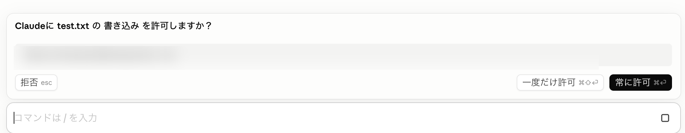

Claude Code を
安全に使う方法を知ろう
BASICS
Claude の操作は 2 種類ある
ファイル編集
コードを書く
テキストを変える
設定ファイルを修正する
Claude の管理範囲内
コマンド実行
npm install
git push
rm -rf …
OS・ネットワークに影響する
PERMISSION MODE
3つの権限モード
モード 1
許可を確認
ファイル編集：確認
コマンド：確認
最初の慣れる期間に
モード 2 ／ デフォルト
編集を承認
ファイル編集：自動
コマンド：確認
日常作業のメイン設定
モード 3
プランモード
ファイル編集：なし
コマンド：なし
複雑なタスクの事前確認に
APPROVAL DIALOG
確認が必要なときはこの画面が出る

NOTE
残り 2 つは普段触らなくていい
許可をバイパス
すべての操作を確認なしで実行。Docker等サンドボックス専用
自動モード
リスク判定付きで自動承認。研究プレビュー段階
どちらも初期状態では無効 ―― Claude Code の設定で有効化が必要
PRIVACY
入力内容のあつかい
①
機密情報・個人情報は入れない
プロンプトはAnthropicのサーバーを経由する
②
学習オプトアウトの確認
Claude.ai → 設定 → プライバシー
「Claudeの改善にご協力ください」をオフ
3 つだけ
覚えよう
モードは用途で使い分ける
承認画面は読んでから進む
機密情報は入れない
1
/
1
← → / Space